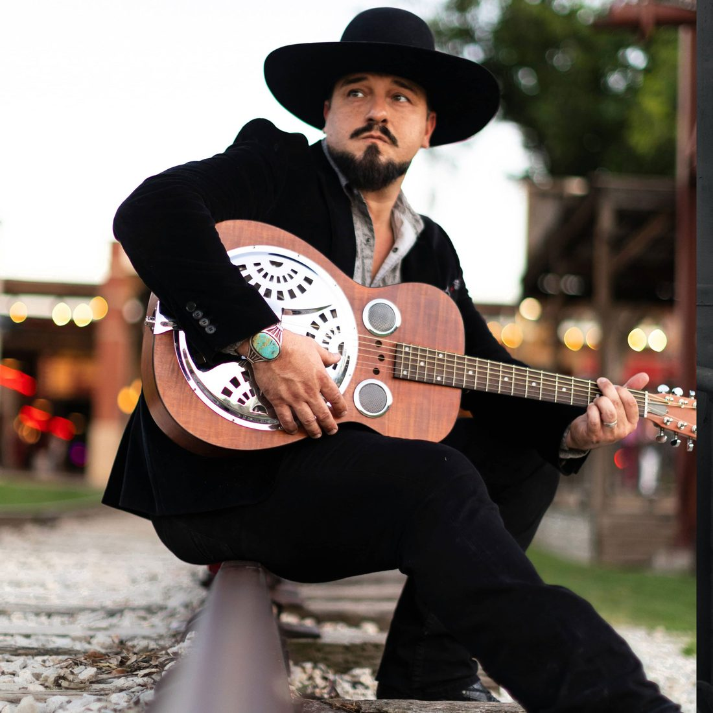

Real Songs, No Apologies
Country, red dirt and southern rock out of North Texas. Over three hundred songs written.
ListenNo Pretty Boy Country

Brandon Howard grew up singing gospel, blues and country in Southwest Louisiana. The road ran through Kansas and Colorado before it settled in North Texas, and all of it ended up in the songs.
He wrote his first one at eleven. There have been more than three hundred since. In 2024 the Texas Regional Radio Music Association named him one of the Future Faces of Texas Country, and he took the Texas State Songwriters Association championship the same year.
He is the former lead singer of Howard County.
booking@brandonhowardmusic.com, which does not exist yet.
Nothing will be delivered until the address is real and the first
FormSubmit message is confirmed from that inbox. Replace it with Brandon's
own contact and no other. See README.md.